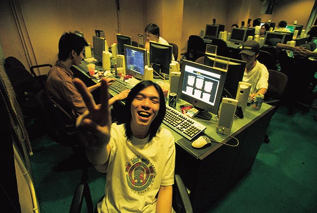
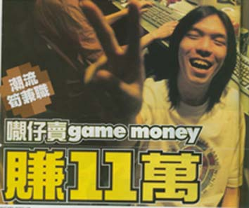
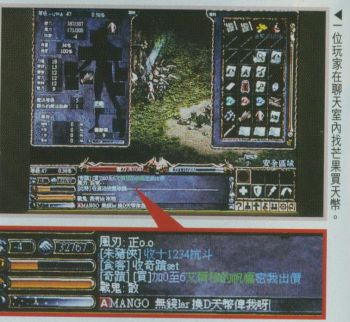

|
2002年10月10日
香港雜誌壹本便利有關少年賣天幣的文章
來源為香港雜誌壹本便利，圖片及文字轉載自無名論壇及3Home天堂谷，要注意的是以下內容謹供各位參考，本網絕不鼓勵各位以真實金錢買賣天幣：
潮流筍兼職 o靚仔賣Game Money賺11萬
潮流興玩online game，即透過互聯網與眾人玩同一隻game，當中有部分玩家玩得特別叻，在game內獲得大量資源，如game內要用的貨幣（GameMoney）及寶物，令他們能夠將多出的資源賣給其他玩家，賺取真金白銀！這些玩家被統稱為「Online Game Hawker」（虛擬小販），綽號「芒果」的19歲青年就是其中之一。
芒果中四輟學，讀了「大一」一年又輟學，找不到工作，但他卻在online game中賺到了金錢與榮譽。最受歡迎online game之一的角色扮演遊戲《天堂》，便是他的成名工具，他每星期只玩3至4日，單靠賣Game Money，半年便賺了11萬元，在網絡世界打出了名堂，玩《天堂》的人，個個都聽過他的大名！
1. 《天堂》──2001年7月推出的online game，有台灣、香港同韓國版。屬於多人上線的角色扮演（RPG）遊戲。《天堂》內玩家可以選擇扮演騎士、妖精或法師等。
2. Server（伺服器）──等於一個遊戲場地，當玩家太多，遊戲管理公司會開新server吸納新玩家。
3. 天幣──在《天堂》行使的貨幣（Game Money），可透過打敗怪物而到得。天幣可購買任何寶物。
4. 打怪──即打怪物，指玩家與怪物對打。
5. 寶物──泛指遊戲中各種道具，包括武器、防禦工具及魔法用品。
6. Level──遊戲中的人物、怪物、武器及防具都用level（數值）來分別其強弱，可透過訓練、買新寶物或累積經驗提升level。
「喂，芒果，我想換天幣呀？幾時有，兌幾多呀？」
「即有，你係熟客，$1兌3000啦，要幾多？」
「要一百五十萬天幣。」
「多謝$500，你入落我戶口後通知我交貨啦！」
這日，《天堂》玩家明仔（化名）在《天堂》的網上聊天室向芒果要求買天幣，明仔話：「芒果好出名，玩《天堂》有邊個唔識佢呀！我第一次搵人買，網友就介紹佢俾我識，最初會約出網吧當面交易，我俾現金佢，佢就即時個game度將天幣過落我戶口，後來熟就電話落order都得。佢好有信譽，一定有貨交，從未走過人數！」
網吧內另一位《天堂》玩家阿成（化名）聽到我們講芒果，也忍不住搭嘴話：「芒果賣最快，我試過問第二個買，佢話要過幾日至有，但係芒果就即刻幫我搞掂。」
鍾意玩online game的人，很多時都廢寢忘餐的打，點解還要用真金白銀去買虛擬的東西？芒果感同身受的說，「雖然話遊戲係假，但係玩家都係有血有肉真人，佢喜怒哀樂同人性，全部都會透過遊戲人物表現出，所以當有人發覺自己角色比人低級，寶物唔夠人多，好多怪都打唔到，會覺得好無面兼玩起好冇癮，咪靜雞雞用錢買power！」
「呢個世界有錢使得鬼推磨，既然有人肯俾錢，我又有能力咯，咪賺佢錢，我又唔係犯法，所以唔會好似其他賣家咁，唔敢認自己係做遊戲買賣生意。」
匿埋屋企日日打機
芒果中四輟學後，曾當過裝修工人，又讀過大一設計學院，但全部都失敗，書讀不成，撞正市道差又找不到工作。當他仍摸不清前路去向的時候，只有沉迷online game，過得過且過的日子。「我讀中學時已經有玩onlinegame《石器時代》，但係個game太簡單，直至舊年7月《天堂》香港開第一個『太陽神』server，我即刻轉玩《天堂》，第一次用芒果個名玩角色扮演game打怪物，賺天幣同寶物。當時已經雙失，日日匿屋企打機，得閒到可以背熟晒遊戲內所有地圖、人物特性、寶物同魔法點用資料，跟住就四圍打怪，汲取經驗。因為熟晒資料，知道點樣運用，人重摸緊點打怪時，我已經打死隻怪獸啦！當時已經知到有online
game買賣呢樣，不過重未諗到自己有能力賺呢錢。」芒果講述他打機賺錢的起步。
玩半年之後，我已經掌握好多打怪秘訣。有時網友問我點打，我都會教下佢，好心有好報，後來網友知道一必贏竅門都會話番俾我知，所以我個account升級好快，重賺到好多天幣，又有大量高值數武器、防具同寶物，計計埋埋，都值成萬蚊，不過個account將會係我生財工具，唔會賣斷。時開始，間中有熟人叫我賣寶物或者換天幣俾佢，因為買家要寶物我唔一定有，亦未必咁易搵到俾佢，所以我主力賣天幣，叫佢自己用天幣去買。」
芒果自覺對《天堂》遊戲瞭如指掌，剛巧今年四月《天堂》又開新server「愛美神丘比特」，他就決心大展拳腳。芒果說他能夠贏別人只有一個秘訣，就是勤力。「新server開，我第一時間去玩試玩版，舊server我要用成半個月先讀熟所有資料，但係今次我就前所未有咁勤力，連續兩日不眠不休就背熟晒。結果新server開唔夠7日，我已經一千個玩家中，排頭4、5位。其實背資料個個都識，不過好多人唔肯做，我肯咪掂！」
一位《天堂》玩家說，普通人淨係玩升級都要成個月，芒果一個禮拜就升到48級，重差唔多有齊晒過百件寶物，真係好掂。」成功上位之後，芒果便藉教人打怪獸，順便兜售天幣，兩個server加埋二千多名玩家，差不多個個都知邊個叫做芒果。由於《天堂》在香港很流行，所以芒果只做本地人生意。
芒果粗略估計，每次買賣數目由數百至三千元不等，頭兩個月都已賺到$50,000，之後天幣兌換價因市場需求少了而下跌，但他現時每月仍賺到$15,000，半年來他已經穩袋了$110,000。人生第一個十萬落了袋，令芒果由一個被人看不起，認定他是讀書不成，好逸惡勞的地底泥，搖身一變成為受網友敬仰的Online Game Hawker，在online game中贏得光榮與掌聲。他的生活也因而起了變化，由終日躲在家中打機改蒲網吧，還結識了在網吧工作的現任女友Annie。
有了豐富收入，又有愛情滋潤，呼朋友喚友唱K睇戲，令芒果頓成為周遭朋友的焦點，「我每日最少賺到一百萬天幣，約$1,000到啦，所以我好多時打3至4日機，賣天幣就『放假』，約朋友出街玩，同拍下拖！不過都要日日check下個game有冇新地圖、怪物或者新消息，第一時間熟讀佢！朋友都好羡慕我可以咁自由又搵到咁多錢！」現在的芒果有能力享受優哉游哉的生活。
芒果很沉醉現在的風光，因為在此之前他絕對是個徹頭徹尾的失敗者。「初初以為升中學可以自由，點知老師郁就罰，重衰過小學。邊個仔唔講粗口呀！我只係走廊大聲講句『ｘ你老母個臭ｘ』，咁就記我大過。食煙俾老師捉到又罰，乜都要罰，點會有心機書呀。
「升到中四因為成績同操行都好差，所以要留班。留班年我都收斂好多，操行由C-改到C，諗住點差都讀埋中五啦，點知學期尾班主任竟然同我講：『你唔使諗，學校一定唔會俾你升班！』呢句說話好似子彈咁一下就打爆我個心。佢冇解釋清楚點解唔俾我升班，淨係話學校決定開除我。唔升咪唔升，我唔會求佢！」芒果從此失學，諗住去讀設計，想將來做漫畫或者廣告，於是他在父親介紹下跟人做裝修，做了半年便儲了萬多元學費。
「大一學費好貴，讀完一年已經用晒做裝修錢，屋企人一早預我讀唔成書，將儲蓄俾晒細妹，供佢去澳洲讀書，所以再無能力俾我繼續讀大一。我想做番裝修，撞正個市道好差，舊老闆生意少唔請人，其他人又嫌我經驗唔夠唔請。」當時芒果覺得他被世人所遺棄，前景好灰，情緒十分低落，惟有日日打機消磨時間，投入遊戲內的角色逃避現實。
芒果在online game內搵到自信，將「Online Game Hawker」視為自己的事業。「阿爸阿媽鬧我成日掛住打機，唔讀書又唔搵做，我話俾佢知我打機賺到錢，佢唔信。可能我大使，無俾家用佢啦，所以當我話有記者訪問我，想問埋父母反應，阿爸都話：『都唔知係唔係認真，你唔好搞我，我唔識答！』只係我一直都無問佢零用錢，佢依家先開始半信半疑咋！但係間中重會哦我，叫我一係讀番書，唔係就正正經經搵份工做。」
芒果亦知道要為自己前途作打算，「我玩《天堂》出晒名，錢又賺過唔少，但係個game開始老化，當玩家個個升到好高級，寶物又齊話，天幣就會貶值，客路會愈來愈少。最初天幣係$1兌500天幣，依家已經$1兌3000啦！」
「我要繼續打機賺錢，所以我已經開始發掘第二個有前景game玩，依家試緊《仙境傳說》台灣server，遲香港開server，我諗又係我賺錢好機會。重有呀，我搵到錢會去讀下電腦課程，實行全身投入online game的世界！」芒果講到眉飛色舞，希望能夠在online game的虛擬世界繼續他的「事業」、繼續掘他的金！
Online Game Hawker有三種
在網上遊戲的虛擬世界，做買賣賺錢的Online Game Hawker可以分三類：
1. 賣Game Money：Online Game Hawker把遊戲中的Game Money出售予他人賺真銀。Game Money與港幣之間便出現一個以公認的兌換價。玩家兌換足夠的GameMoney後，可以輕易選購他們需要的物品，所以兌換生意長做長有，唯一風險是兌換價跌得很快。芒果便是專做Game Money兌換生意的Online Game Hawker。
2. 出售整個帳戶：當玩家玩厭遊戲後，發覺該遊戲仍很受歡迎的話，便可以把自己的帳戶一次過賣給別人，乘機賺一筆。不願上鏡的賣家「PC王」曾經把玩到厭的《EverQuest》帳戶賣了萬多元。帳戶的價值視乎擁有多少寶物及天幣，有些只值數百元。
3. 低買高賣：OnlineGameHawker以賤價收購別人的帳戶或寶物，然後分拆各物品，再尋找渴求該物品的買家以高價出售。PC王亦曾經以一千元賤賣了一個《DarkAgeofCamelot》onlinegame的帳戶給熟朋友，他相信該朋友轉手分拆帳戶物品後，可以淨賺到$500左右。
事前準備
第一步：一部電腦起碼有Windows95中文版，PentiumII以上的CPU，記憶體128MB以上，可顯示800x600高彩的顯示卡，可上網（寬頻為佳）。
第二步：購買遊戲軟件，或到遊戲公司網頁直接下載軟件。主程式軟件約$5至$400不等。《天堂》售$1。
第三步：向遊戲管理公司購買點數卡（一般便利店、玩具店及文具店有售），按指示在網上登記帳戶，輸入密碼後便可以進入遊戲。一般遊戲＄１元一點，每點可玩一個多小時左右。部分大型網吧會提供免點數玩online game的優惠。
開始遊戲
第四步：玩家可以獨自玩之外，還可以加入或組織同盟，集合其他玩家合作打怪，甚至奪取城堡，在遊戲中擴張勢力。
第五步：玩家可以透過遊戲中的聊天室，與其他玩家聯誼、買賣、交換情報及打機心得。
進行買賣
第六步：如想進行買賣，可直接在遊戲聊天室找買家賣家。否則可到其他onlinegame討論區，如http://opa.oia.com.hk/、www.2000fun.com或上www.ebay.com、www.red-dots.com等拍賣網查詢。
第七步：進行買賣交易最好有朋友陪同，再到相熟網吧以現金交收。若涉及海外買家或賣家，應透過信譽良好的網上拍賣網如eBay進行交收。
Online Game管理公司不鼓勵買賣活動
時下絕大部分online game公司都明文規定不准玩家私下以現金買賣遊戲帳戶或遊戲中的任何物品。可是世界各地，只要有人玩online game的地方，都不難見到online game的買賣活動，其中屬全球性質的拍賣網www.ebay.com更特別為online game玩家開設專區提供拍賣場地。
在香港的online game買賣活動要透過玩家在online game討論區或聊天室兜售，或者到本港最具規模的online game討論區「OPA」找買家或賣家，再相約見面進行交易。而香港的「點點紅」拍賣網雖然沒有設online game專區，但發言人說：「曾經見過有客戶上網拍賣online game帳戶，但交易方法就要買賣相方自己搞掂，因為個帳戶唔係實物，我好難保障到買家同賣家。」
《天堂》因為受歡迎，估計是現時涉及最多買賣活動的online game之一。《天堂》發言人盧小姐稱，公司不鼓勵玩家私下把遊戲戶口內的東西進行現金交易，但卻未曾做過統計有多少人在遊戲中專做買賣。遊戲一旦涉及現金交易後，很容易因為物品有價而引發網上盜竊罪行。盧小姐提醒玩家，發現戶口資料被盜應該報警，公司會協助警方調查，但《天堂》開了兩個server至今，未有人因為在遊戲中盜竊他人物品而被起訴。



美國正式伺服器10月9日更新內容
原文：美國天堂官方網站公告
中文翻譯：天堂．真相
1. 說話之島格鬥場部分普通區域位置修正為戰鬥區域。
2. 解決了傳送圖素的問題，此問題會導致在進入洞穴或旅館的出入口時會彈回桌面。
3. 修正了冥想術，施法者在攻擊時冥想術效果將會消失。
4. 在盟戰時使用緩速術不會變紫。 |